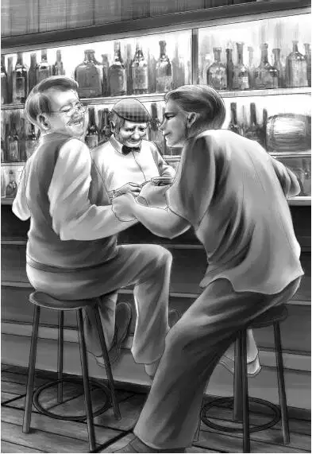

Chapter 7 Grandfather Makes a Call
和奥登先生的初次见面，钱贩子倒是一点儿都不怯场：
“我叫弗莱·维尔利，很乐意为您效劳。芬顿，还不介绍一下你的朋友？我是钱币商人，也偶尔收收古董。您叫我弗莱就好了。”
奥登先生点了点头：“你好，维尔利先生，你是收购硬币的？”
“是的，先生！告诉你吧，这座岛上的人什么都要收藏，从来不会扔掉，这儿真是个不错的地方。”
“真的？”奥登先生问道，“那他们会把东西卖给你吗？”
“那当然，他们收藏了好多古币——估计是从曾祖父辈传下来的。就因为我花十美元买了枚25分币，他们都很信任我。十美元换25美分，谁会不乐意呢？”
奥登先生本想回答“我就不乐意”，但并没有说出口，只是继续喝起了咖啡。
弗莱先生看了看奥登先生的表链，问道：“我可以看看表链上的那枚古币吗？您知道这个值多少钱吗？”
“依我看，”爷爷答道，“可能值不了几个钱。”
“说得太对了。”弗莱先生说，“就是因为上面有洞，就变得不值钱了。要不是哪个白痴打了个洞在上面，这东西起码得值250美元，绝对不骗您！这东西很少见。”

奥登先生说道：“我知道，所以我才把它穿在了表链上。我就是那个在上面打洞的白痴。”
“不好意思！”弗莱先生眨了眨眼，“我并不是存心伤害您的。对了，您身上还有硬币吗？我只要看一眼就知道值多少钱。”
奥登先生把兜里的钱全都掏出来，放在了柜台上。弗莱十分迅速地把硬币挨个儿翻了一遍，看了看日期。
“唉！”他摇了摇头，“这些都不行。”
“看看这个呢？”奥登先生说着，从背心的口袋里掏出一枚一角钱的古币。
弗莱接过来看了一眼，便“啊”地叫了一声，马上从衣兜里掏出一个放大镜，放在硬币上观察起来。
最后，他抬起头，缓缓说道：“无名氏先生，您这枚硬币可真是少见呢。我出一百美元，现金。”
奥登先生再次摇了摇头：“忘了告诉您，这东西我是不会卖的，只想知道值多少钱而已。”
“可您现在已经知道了啊！”弗莱说道，“您真的不想卖？”
“真的不想。”奥登先生说。
弗莱先生并没有就此罢休，继续游说道：“我会给它找个好买家的——比如大学啊，博物馆啊，还有酷爱硬币的收藏家。”
奥登先生再次拒绝了他，低头看了看手表。
弗莱先生凑到近前，压低声音道：“无名氏先生，我看你这人还不错，就跟你说了吧。你这块表已经很旧了，我又恰好收藏这种东西。我用一块很精美的现代表跟你换，怎么样？我敢说，你这表肯定已经不准时了吧？”
“一分一秒都不差。”奥登先生说，“我既不想卖，也不想换。”
“好吧。”弗莱先生愉快地说道，“或许你会改变主意的，我随时都会恭候的。”说完，他眨了眨眼，走出了商店。
爷爷望着门外弗莱远去的身影，说道：“但愿他不会上山骚扰格雷女士，去她那儿买东西。”
“不会的！”芬顿先生说道，“他连门都进不去。女仆艾娃盯得很紧，绝对不会让他进的。”
“这样就好！”爷爷放心了，“对了，那位格雷女士到底怎么回事？为什么老把自己关在屋子里？”
“这个我也不太清楚。”芬顿先生说，“她一直都是这个样子，都快赶上隐士了。我只知道，她几乎从不走出那栋房子。”
“可她却同意岛上的孩子使用教室，这说明，她很在乎孩子们。”
“估计是的。”芬顿先生说，“对了，还有件事呢。看到我商店旁边的白色小屋了吗？那是格雷家的图书馆。格雷女士的爷爷是图书收藏家，因此，格雷专门建了个图书馆，把爷爷的藏书放进去，供岛上的人看。不过，去图书馆的人很少。”
“为什么？”
“还不是因为那些书很无聊。”芬顿先生说，“都是过了时的旧书，字体又小又细，也没人读得懂。”
“那你是怎么进去的？”奥登先生问道。
“走进去的啊！”芬顿先生大笑起来，“那儿的门从来不锁。以前倒是有个女孩，每逢周六就去图书馆值班，不过没什么可守的，根本没人去，她只是枯坐着，因此之后她再也没去过。现在，那个图书馆差不多算空城了。”
奥登先生感到有些惊奇——岛上的人竟然没有听说过格雷女士。他们居然不知道，她是个非常知名的作家。在来小岛之前，爷爷就读过了她的所有作品。他还知道，格雷女士资助了全国各地很多所学校，可谓远近闻名。
“真是太可惜了。”奥登先生说，“那里可能都是些好书呢。”接着，他换了个话题，问芬顿先生，“你觉得弗莱这人怎么样？”
“我不太喜欢他。”芬顿先生立刻回答，“他或许真是货币商人，或许是假冒的，反正我信不过他。”
“为什么岛上渔民这么信任他？”奥登先生问道。
“这还不容易？他花十美元从莫斯先生那里买了枚25分币，之后的事情就顺理成章了！我提醒过大家，不过没人愿意听。”
“看来，我得到格雷女士家走一趟了，就是不知道能不能进得了门。”爷爷说道。
“肯定没问题。”芬顿先生说，“艾娃很懂事，一定会让您进去的。”
奥登先生点了点头，“不过我得先给朋友打个电话，借用下你的电话可以吗？”
商店门边的墙上就挂着一部电话。
“尽管用好了。”芬顿先生说，“我马上要出去一趟。”
奥登先生的电话并没有打很久，不过他似乎很开心。
放下电话后，他沿着山路来到了庄园，摘下帽子，按响了门铃。艾娃从窗帘的缝隙里看到了奥登先生，一眼就认出他来。
她打开门，问道：“您是奥登先生吧？格雷女士正等着您呢。”
奥登先生跟随艾娃走进了客厅。
“奥登先生来了。”艾娃通报道。
格雷女士背对着门口，坐在桌旁。闻言她只转过身来说了句“请坐吧”。
爷爷拉过一把椅子，坐在了格雷女士身边，“你对我的孩子们十分关照，我想专程过来谢谢你，不过我不能待太久，不然孩子们该担心了。在我离开之前，想告诉你件事儿，一个很奇怪的货币商人来了，正在岛上四处转悠。”
格雷女士把铅笔啪的一声拍在了桌子上，恨恨地说道：“弗莱·维尔利！”
“原来你知道他叫什么，我只是来报个信而已。据我估计，他这次打算从岛上的居民手里狠狠诈上一笔，然后就会消失。”
两人沉默了一阵，之后便听见格雷女士说：“非常感谢。”